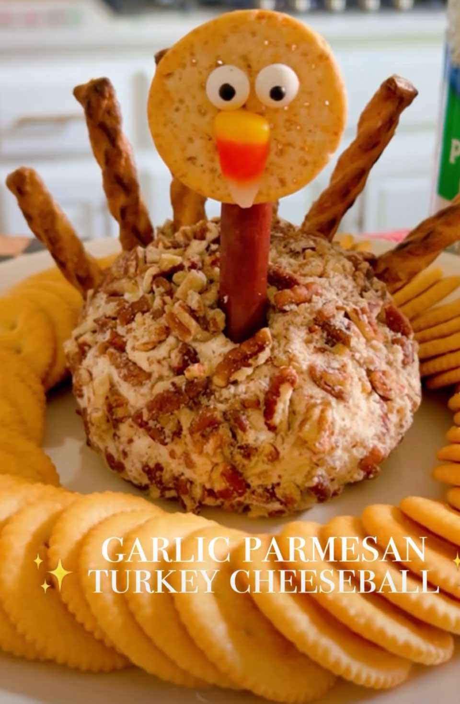

Cheese Ball
Appetizer
PrepPT0S
CookPT0S

Ingredients
- Ingredients
- 12 ounces cream cheese, softened
- 1/3 cup grated Parmesan cheese
- 1/4 cup mayonnaise
- 1/2 teaspoon dried oregano
- 1/4 teaspoon garlic powder
- 1/8 teaspoon kosher salt
- Coating
- 1 cup pecans, finely chopped
- 1 tbsp grated Parmesan cheese
Directions
- To your stand mixer add the cream cheese, mayonnaise, parmesan cheese, garlic powder, oregano and salt until smooth, about 1-2 minutes.
- Cut a large piece of plastic wrap and add the cheese mixture to the middle.
- Wrap into a ball and refrigerate for 1 hour.
- Roll the cheese ball into the chopped pecans and serve chilled.
- For the turkey - I used pretzel sticks for feathers, turkey beef stick for the neck. For the face use a round cracker and use icing to add candy eyes and candy corn beak
This page includes Schema.org Recipe structured data for recipe importers.